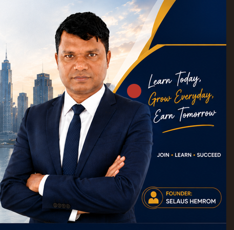
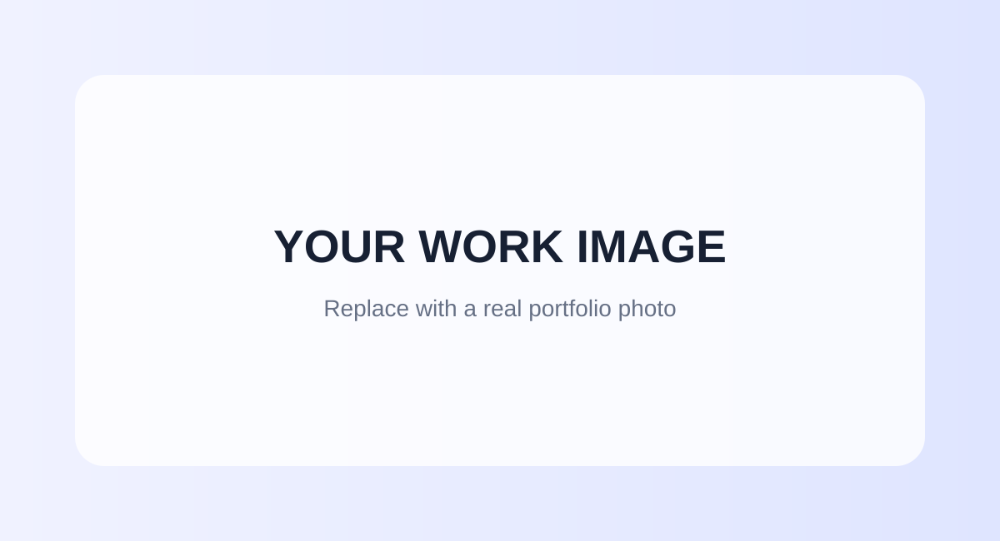

Data Entry
Accurate data entry, spreadsheet updating, data organization and document handling.
I am Selaus Hemrom, a Bangladesh-based professional with 11+ years of experience in employment services, project coordination, documentation, reporting, employer engagement, training and digital work. I am currently open to remote full-time, part-time and freelance opportunities in BPO, Virtual Assistance, Data Entry, Web Research, Lead Generation, Administrative Support and Digital Marketing.

I combine more than 11 years of professional experience with practical digital skills to support organizations, businesses, entrepreneurs and remote teams.
My professional background includes employment services, project coordination, documentation, reporting, employer communication, data collection, training facilitation, career support and stakeholder coordination.
Alongside my professional career, I have developed hands-on capabilities in digital marketing, social media management, Canva, WordPress, online research, lead generation, content development, Google Workspace and Microsoft Office.
I am particularly interested in remote opportunities where accuracy, communication, reliability, research ability and digital skills are important.
Practical remote support for BPO companies, agencies, entrepreneurs, small businesses and online teams.
Accurate data entry, spreadsheet updating, data organization and document handling.
Administrative support, email handling, online research, scheduling and routine digital tasks.
Company research, contact research, market research, information collection and online verification.
Business research, prospect list building, contact discovery and lead database preparation.
Documentation, reporting, file organization, data tracking and coordination support.
Social media, Meta Ads, content planning, Canva design and digital marketing support.
Facebook and Instagram content support, basic campaign planning and social media management.
Professional communication, follow-up, information sharing and client coordination.
Google Docs, Sheets, Drive, Gmail, Microsoft Word, Excel and PowerPoint.
11+ years working with organizations, employers, youth, teams and stakeholders.
Strong experience with reporting, documentation, data collection and coordination.
Digital marketing, social media, Canva, WordPress and online tools.
Professional communication with employers, clients, trainees and project stakeholders.
Comfortable working independently using online communication and collaboration tools.
Actively developing new digital, AI and online-work skills.
In addition to BPO and administrative support, I have practical experience with digital marketing, social media, Meta Ads, Google Ads, Canva, content planning and online business support.
Selaus Academy provides practical learning resources around digital marketing, freelancing, Canva, social media and online career development.
Visit Selaus Academy →A combination of professional, administrative, employment, digital marketing and online-work skills.

Facebook, Instagram, Meta Ads, content planning and digital marketing.

Training facilitation, coordination, career support and stakeholder communication.

Website development, digital presence, content and online business support.

Employer communication, industry visits, employment coordination and reporting.
Experience that provides a strong foundation for remote administrative, BPO and digital roles.
Officer – Inclusion, Employment & EDT
Employment services, employer engagement,
documentation, reporting, data collection,
coordination and career support.
Field Facilitator
Youth engagement, facilitation,
community development and project implementation.
Project Supervisor
Team coordination, community mobilization,
project implementation, entrepreneurship
and business development training.
Volunteer
Youth engagement, volunteer coordination
and community development.
Field Facilitator
Livelihood, awareness sessions,
social development and stakeholder coordination.
National University / Rangpur Carmichael College, Rangpur
Professional digital marketing training and practical online application.
Professional graphic design training and Canva-based content development.
Training of Trainers and business development.
Practical entrepreneurship and business development.
Monitoring, Evaluation, Accountability & Learning, HR Administration and Report Writing.
Professional experience developed through employment services, youth support, employer engagement, project coordination and training.
I am open to BPO, Virtual Assistant, Data Entry, Web Research, Lead Generation, Administrative Support and Digital Marketing opportunities.